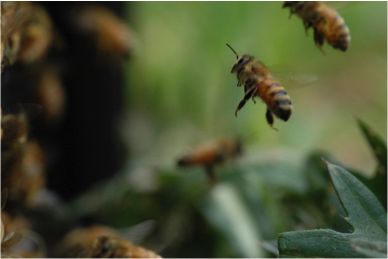
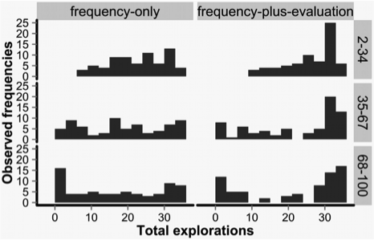

Research 01
集合知
１.「集団の知恵」のアルゴリズムを探る
個人のもつさまざまな情報をよりよい社会的決定のためにどのように集約し得るのかという問いは、21世紀の社会科学の直面する重要課題の1つです。本プロジェクトは、近年、生物学領域と情報科学領域で大きな注目を集めている社会性昆虫の「群知能」(swarm intelligence)に関する知見を参考にしながら、人間の集合行動における「集合知」の発生可能性について検討します。ハチやアリなどの社会性昆虫は個体として限定された認知能力しかもたないものの、ローカルな相互作用を通じ、巣の選択や集団での採餌場面で、群れ全体として見事な集合解を出すことが知られています。社会性昆虫であるアリの研究者と連携することで、人間集団において集合知の生まれる認知的・生態学的な条件について、数理モデル、コンピュータ・シミュレーション、種間比較実験（アリとヒトとの比較実験）、インターネット実験などを用い理論的・実証的に明らかにします。本プロジェクトは「集合知」の成立要件に関する基礎的な知見を提供すると共に、インターネットを介した情報の効率的集約や社会的な合意形成のあり方についても応用的示唆を与えることが期待されます。  
科学研究費補助金・基盤研究 (A)「集合的意思決定のメカニズム：計算モデルによる集合知発生条件の解明」（令和５-９年度 PI 亀田達也）